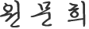

인사말
역사와 문화가 공존하는 짜장면박물관
짜장면박물관을 찾아주신 여러분께 진심으로 감사의 말씀을 드립니다.
1883년 제물포는 한적한 어촌마을이었습니다. 그러나 개항을 통해 외교의 중심지, 서구문물도입의 첨병, 금융의 중심지로 발돋움하게 됩니다. 특히 세계의 많은 사람들이 몰려들어 조계를 형성하여 제물포는 나라 속의 나라와 같은 형상을 띱니다.
당시 선린동 지역에는 중국 산동에서 건너온 화교들이 많은 중국요리점을 열게 됩니다. 그들은 한국인의 입맛에 맞는 음식을 개발하고자 혼신의 노력을 통해 짜장면을 만들어냅니다.
짜장면은 우리 국민 모두가 즐겨먹고 사랑하는 어린시절의 소중한 추억이 담긴 음식입니다. 이에 짜장면의 탄생지인 인천 중구에서는 근대 음식史에서 중요한 역할을 한 등록문화재 제246호 공화춘에 짜장면박물관을 개관합니다.
짜장면박물관은 짜장면 관련 다양한 콘텐츠와 커리큘럼을 지속적으로 만들어가는 국내 최초의 짜장 테마박물관으로 짜장면의 역사와 문화, 관련 교육이나 체험 등 동시대 흐름에 부합하는 박물관으로 자리를 잡아가고 있습니다.
짜장면박물관은 지역주민과 방문객의 입장에서 운영하겠습니다. 더불어 세상에 귀 기울이며, 함께하고 소통하는 21세기 열린 박물관이 되도록 노력하겠습니다. 항상 소중한 조언과 많은 사랑을 부탁드립니다.
인천중구시설관리공단이사장 